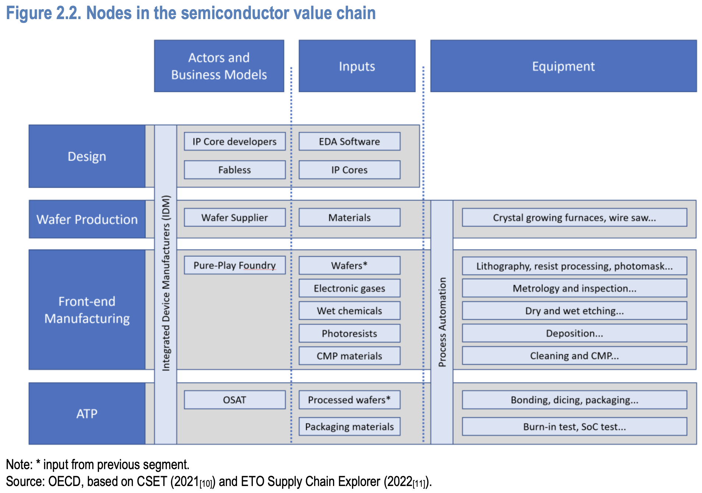
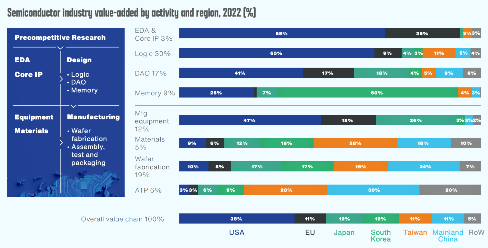
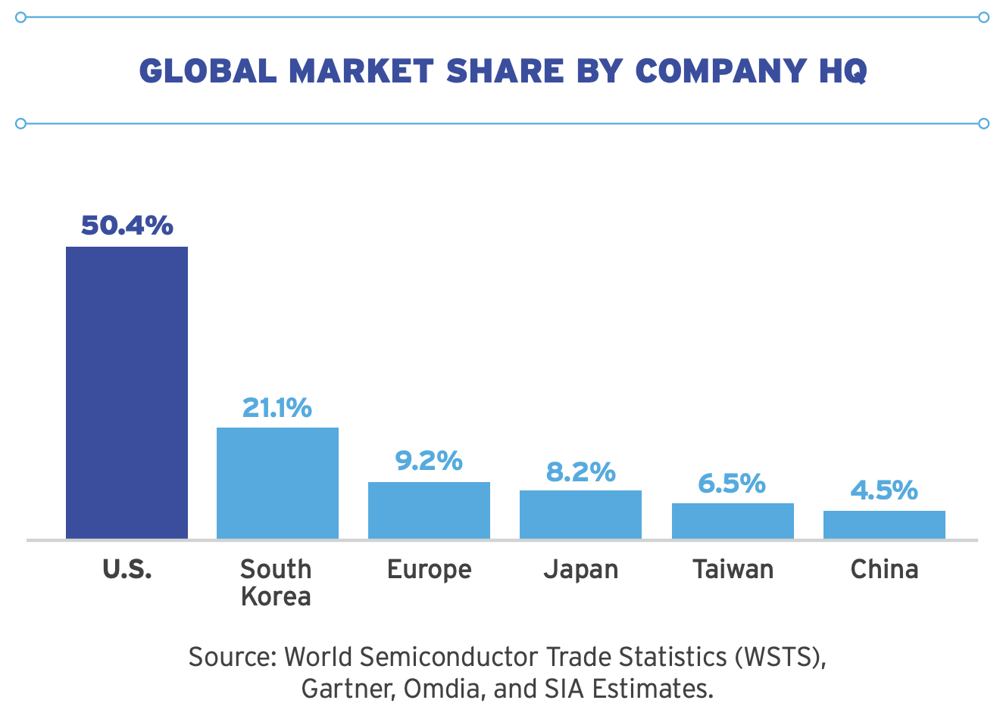
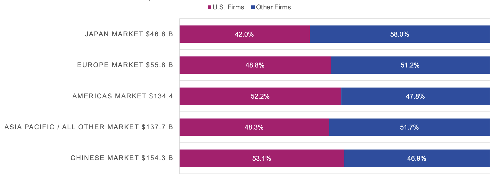
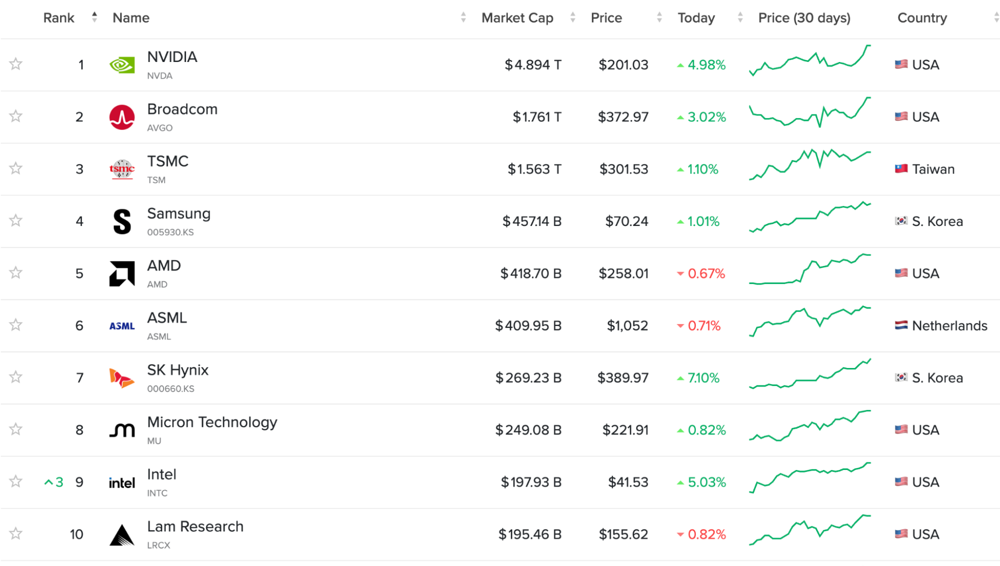
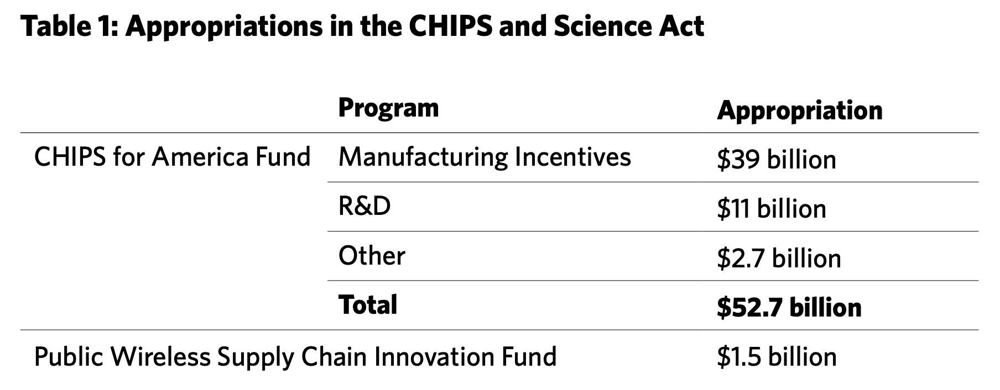
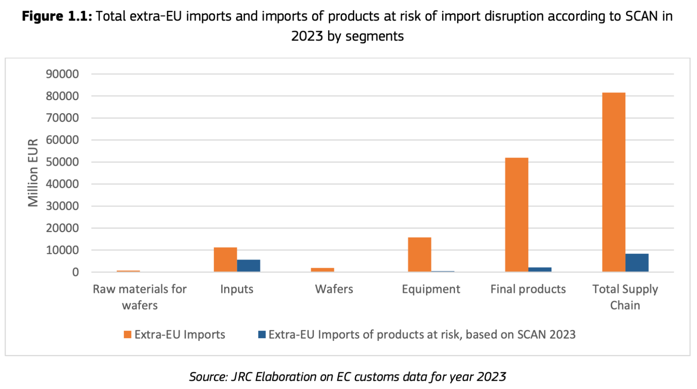
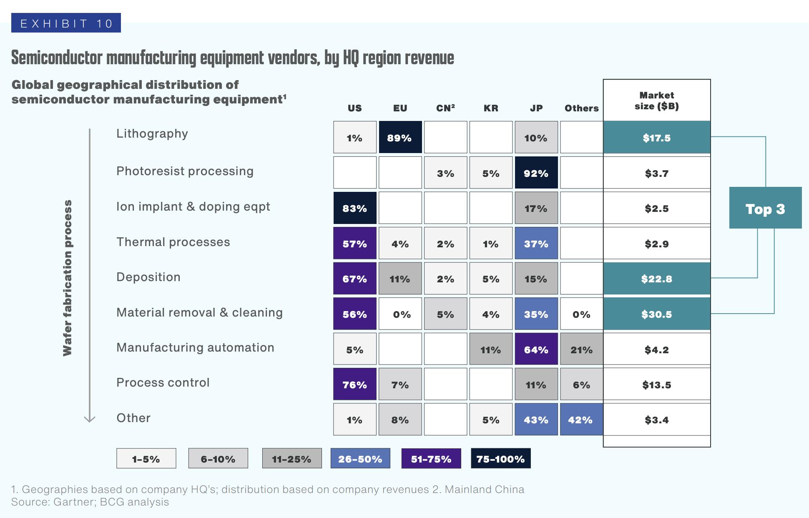
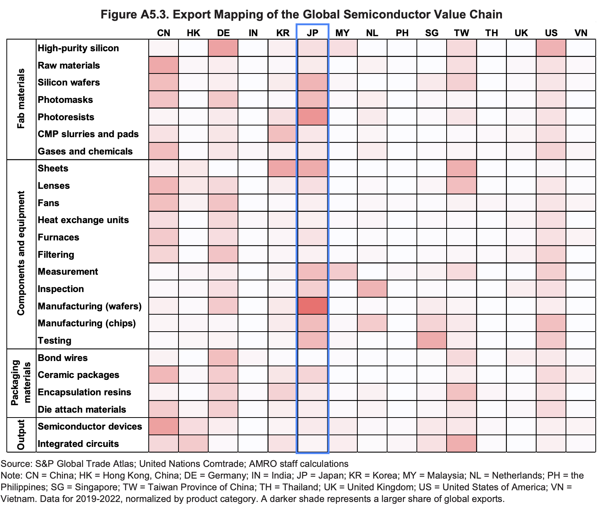
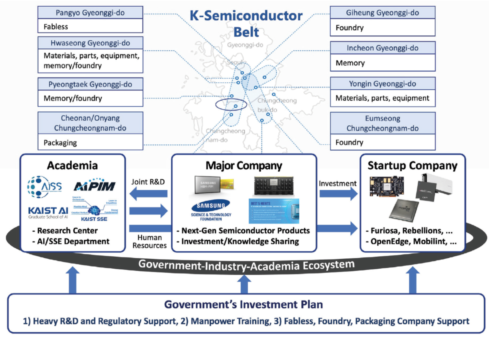

Introduction
Semiconductors – or chips— are the backbone of today’s technology-driven world. They power nearly all modern technologies, from refrigerators, cars, and smartphones to artificial intelligence, advanced weaponry, and spacecraft. A typical car can contain up to 3000 chips[1], while a smartphone contains 160 chips[2] that require some of the most advanced technologies in the world to produce. Valued at USD 681 billion in 2024, the global semiconductor market is expected to expand at a compound annual growth rate (CAGR) of 15%, surpassing USD 2 trillion by 2032[3]. This expansion reflects surging demand for consumer electronics and the accelerating development of artificial intelligence (AI)[4], Internet of Things (IoT), and machine learning (ML) technologies[5] worldwide. In the US, despite accounting for only 0.3% of the economic output, semiconductors are an important economic input that amounts to 12% of its GDP[6]. On the other hand, for Taiwan, one of the major chip manufacturing countries, the domestic semiconductor industry contributes to 60% of its exports and 18% of its GDP[7].
Being a product with such great significance and cruciality, semiconductors and the industry around them have become more central for economic policy and resilience than ever. Its truly globalized supply chain, from designing, fabricating, to testing and packaging, also inevitably raises geopolitical security risks. According to an estimate of the Global Semiconductor Alliance (GSA), a semiconductor could travel across international borders 70 or more times on average before it reaches an end consumer[8]. On each node of the supply chain, the input could come from different countries, from the raw materials, wafers, manufacturing equipment, and designing software. Then, the output for each node might be sent to another country for the next stage. Thus, for an end product, each of the chips used could be designed, manufactured, assembled, and tested all in different countries. However, this did not make the supply chain more resilient to disruptions. In fact, the semiconductor industry is also highly specialized, where many of the most advanced technologies used in each stage of the supply chain are mastered by only a few countries. This makes the supply chain vulnerable to disruptions at any stage of the supply chain, and all the countries that rely on or are involved in this supply chain fall under similar risks. This makes the semiconductor production and the export of advanced chips often weaponized by major players like China and the US, which usually control or dominate certain chokepoints. For example, the US designs the most advanced chips for powerful computations, and China has a near monopoly on some rare earth materials. The tension between Taiwan and China also brings up the concern about the industry’s overreliance on Taiwan, where over 90% of the most advanced semiconductors (<7nm) are manufactured[9].
But, how is the global semiconductor supply chain actually structured nowadays? What are the central players? And what are these countries’ policies for their chip industry? This article aims to unpack these questions by walking through a brief history of the chip industry and looking at how major countries like the US, the EU, Japan, South Korea, and China are shaping their economic policies in pursuit of technological independence. And finally, as a Taiwanese citizen and an ethnic national, I will also explore how the Taiwanese government is navigating this global competition, and what challenges and opportunities lie ahead for Taiwan in this era of semiconductor geopolitical rivalry.
Mapping the Semiconductor Supply Chain
Today, the global semiconductor supply chain is globally distributed, highly specialized, and largely interdependent[10]. There are more than 70 countries[11] are involved in the semiconductor trade, while the Asia Pacific region holds approximately 50% of the global semiconductor market share[12]. The supply chain is usually divided into three main segments: design, manufacturing, and assembly, testing, and packaging (ATP). In each of these stages, an average of 25 countries are directly involved in the production, and another 23 countries are involved in supporting its market functions[13]. Throughout the supply chain, the semiconductor trade amounts to about USD 1.2 trillion[14]. According to the analysis by EconPol, with a threshold of taking at least 1% of the global semiconductor export share (which eliminates inputs, equipment, and final chips that take only minor portions in the global supply chain), there are 16 material inputs (including raw materials, chemicals, and wafers), 29 types of equipment, and 27 types of final chips. Below is a figure that shows the key nodes of the semiconductor value chain, which includes all steps that add value to the final products (chips) in the industry.

As most of the technology requirements in the semiconductor industry are highly technical and capital-intensive, the major players in the industry generally have developed their own specialized areas while taking smaller shares in other parts of the supply chain. For a short overview, the United States leads in electronic design automation (EDA), core intellectual property (IP), and chip design in general. Core IPs are reusable modules of circuits or logic that can be used in chip design after licensing. EDAs are advanced software used to design chips. These two sectors combined are the “inputs” of the semiconductor design, where the key American companies include Cadence, Synopsys, and Intel. Additionally, Nvidia, Broadcom, AMD, Taxes Instruments, and Intel are some of the world-leading chip designers headquartered on US soil. The Netherlands, through the company ASML, has a near monopoly on extreme ultraviolet (EUV) lithography equipment, which is the most advanced machine to print highly complex circuit patterns onto silicon wafers. Japan is essential in supplying critical advanced materials, such as silicon wafers and high-purity chemicals, and fabrication equipment, and South Korea leads in memory chips and fabrication. China, being the second-largest economy in the world, takes a substantial share in various sectors, especially in critical materials and ATP. Lastly, Taiwan plays the most important role in advanced chip fabrication and ATP, as the Taiwan Semiconductor Manufacturing Company (TSMC) alone holds over 63% of the global foundry revenue and produces over 90% of the world's leading-edge (<7nm) chips[16]. Although some countries and companies may have been playing more diverse roles in the supply chain, none of them is capable of internally producing all types of semiconductors needed in a modern economy[17]. The figure below shows the share of each country/region in different segments of the semiconductor value chain.

Semiconductor Protectionism
This internationally segmented nature of the semiconductor industry has led to dependencies between countries and vulnerabilities within its supply chain. While countries have been implementing policies that strengthen their domestic semiconductor sector, the risk from the global reliance has remained largely underappreciated by policymakers. Its importance came into focus during two pivotal moments: the global chip shortage triggered by COVID-19, which disrupted chip supply and halted production in industries ranging from automobiles to consumer electronics, and the escalating U.S.–China trade war, which highlighted semiconductors as the critical battleground of the recent technological rivalry. The latter especially sheds light on the semiconductor supply chain’s geopolitical sensibility and its potential to be weaponized, which has started to cause more disruption to the industry in addition to the traditional risk factors, such as natural disasters.
As KPMG’s newest industrial report[19] points out, territorialism and tariffs are among the most significant challenges that the semiconductor industry will face over the next three years, making supply chain flexibility and diversification a top strategic priority. The trend is especially evident given the ongoing trade war and technology contest between the U.S. and China, which brought about a new era of protectionism and strategic decoupling[20]. The other countries, especially other advanced economies such as the European Union, have also introduced their own industrial and regulatory frameworks in response to this global economic shift, aiming to strengthen technological sovereignty and enhance supply chain resilience.
The roots of protectionism lie in the intensifying rivalry among major economies to consolidate their leading role in the global political and economic realms against the rise of China, a country with a large systemic and ideological difference from the liberal democracies. The U.S. and E.U. have long expressed concern over their widening trade deficits with China and the latter’s rapid development in advanced manufacturing and technology, fields with potential dual-use applications for military power. In response, Washington has adopted increasingly assertive measures, beginning with the U.S. Trade Act of 2018, which imposed tariffs on Chinese goods to counter what it described as unfair trade practices[21], and then in the Chips and Science Act of 2022, which seeks to revitalize domestic semiconductor production and limit China’s access to cutting-edge technology.
In the intensifying global tech rivalry, Taiwan has become a hot spot. On one side, China’s long-standing ambition to bring Taiwan under its control looms large; on the other, the United States continues to act as Taiwan’s primary security guarantor. Caught between these two world superpowers and facing a persistent threat of annexation, Taiwan certainly sits on the front line of the US-China tensions. Yet the stakes for a potential war extend far beyond regional security. Being one of the main actors in the global semiconductor industry and the biggest manufacturer of cutting-edge chips, a conflict in the Taiwan Strait could cause devastating global economic consequences by triggering an acute shortage of the world’s most advanced semiconductors that are used to power iPhones, advanced computers, artificial intelligence, spacecrafts, and so on. As The Economist put it, “Were production at TSMC to stop, so would the global electronics industry[22].”
For Taiwan, the dominance in semiconductor manufacturing offers the island substantial geopolitical leverage—a concept popularly described as the "Silicon Shield." It suggests that Taiwan’s role in the global technology ecosystem deters military aggression by increasing the cost of disruption[23]. However, for other countries that asymmetrically rely on Taiwan, such as the US, where Apple and Nvidia are the world’s two biggest buyers for TSMC’s advanced chips[24], this may heighten rather than mitigate their geopolitical risks and harm their economic resilience. Economic entanglement does not always preclude strategic conflict; rather, it may become a source of vulnerability in crisis scenarios. What are the possible moves that the island can take to maintain its strategic advantage amid pressures as governments and multinational companies push for “de-Taiwanization”? The following sections explore the semiconductor policies of the major countries and how Taiwan is responding to protect its national interests.
Semiconductor policies of the major countries
To access the global policy landscape for this increasingly politically involved industry, we will look at the policy of each of the six largest players in terms of global market share: the U.S., South Korea, the E.U., Japan, Taiwan, and China. They together account for 99% of the global semiconductor industry by company headquarters.

The USA
The United States is presently the global leader in the semiconductor industry. According to the report of the Semiconductor Industry Association (based in Washington), the U.S.-headquartered companies reached sales of $318 billion in 2024, taking 50.4% of the global sales revenue[26]. In all major countries and regional semiconductor markets, U.S.-headquartered companies also hold a significant share of the sales market.

The United States leads especially in the design sector of the semiconductor value chain, as well as in core intellectual property(IP), electronic design automation (EDA), and chip-making equipment. Among the ten largest semiconductor companies by market cap, six of them are U.S.-based[28]. Nvidia, Broadcom, and AMD are the so-called “fabless” companies that concentrate on designing and selling the chips. They outsource chip fabrications and have the highest R&D margin (investing over 25% of revenue into R&D) in the semiconductor industry[29]. On the other hand, the integrated device manufacturers (IDM), including Micron Technology and Intel, maintain vertical integration from design, manufacturing, packaging, to the selling of chips, all in-house. Lastly, Lam Research is one of the world’s largest suppliers of wafer-fabrication equipment.

The most important recent policy of the United States is the CHIPS and Science Act[31] (informally the CHIPS Act), passed in 2022. The CHIPS Act allocates a total of $52.7 billion in investment in the domestic semiconductor industry[32]. Among this, $39 billion, as both direct grants and tax incentives, is dedicated to promoting domestic semiconductor manufacturing and packaging facilities, and focuses especially on strategically important chip productions to ensure the stability of the chip supply chain in the US. Another $11 billion is used in the R&D of chip design, aiming to maintain the leadership and prepare the companies for paradigm shifts in semiconductor technology. It also provided a 25% tax credit for chip fabrication, initially valued by the Congressional Budget Office at $46 billion[33].

The primary goal of the CHIPS Act is to “bolster the supply chains and protect our vital national and economic security[35].” The analysis of the Carnegie Endowment for International Peace[36] underlines Washington’s growing concern over China’s aggression toward Taiwan, warning that a potential conflict could jeopardize U.S. national and economic stability. The war in Ukraine also highlighted the importance of chips in the U.S. military readiness, as American companies struggled to provide enough weapons to Ukraine due to chip shortages[37]. Furthermore, the risk of natural disasters such as earthquakes in Taiwan and Japan, both of which are located on the circum-Pacific seismic zone known as the “Ring of Fire,” creates another layer of vulnerability. The CHIPS Act especially focuses on increasing domestic advanced chip manufacturing, as the US did not have any capacity to manufacture < 5nm chips in 2022, while Taiwan and South Korea were already mass producing 3nm chips.
The secondary goal of the CHIPS Act is to ensure the U.S.’s place as a global leader in science and technology, which refers to the current leadership in chip design and R&D. The U.S. is currently benefiting from a positive feedback loop of innovation[38]. The country’s dominance in global semiconductor sales drives more R&D investment, which then sustains the semiconductor leadership of the U.S.. Thus, allocating the budget to R&D can not only fuel more innovation in chip design but also ensure that the country continues to benefit from such a positive cycle.
The EU
The EU takes about 12.3% of the global semiconductor market[39], a significant but not dominant position in the industry. It holds about 16% of the global demand for chips[40]. Similar to how the US chip production fell after outsourcing chip fabrication to Asia for cheaper labor in the 1980s and 1990s, European chip production has fallen from 30% in 1990 to 12% in 2019[41]. Currently, there is no EU-headquartered company that produces any chip smaller than 18 nm[42]. Although the EU currently holds 30% market share of the automotive chip production[43], the range of chips used in automobiles is between 14nm to 28nm, and even as small as 7nm chips[44] for some particular applications, which the EU has to rely on suppliers in Taiwan and South Korea. Additionally, the EU does not have any Outsourced Semiconductor Assembly & Test company (OSAT), which increases its vulnerabilities in the lower ends of the supply chain.

On the other hand, the EU’s strength lies in chip design and fabrication equipment. The key IDM companies include STMicroelectronics in Switzerland, Infineon in Germany, and NXP in the Netherlands, and the key EDA company is Siemons in Germany. One particularly important company is ASML in the Netherlands. It produces state-of-the-art lithography equipment that is used in manufacturing the most advanced cutting-edge chips (all 5nm and smaller chips are made using ASML’s EUV technology), and it is the only company in the world that produces these machines[46]. The EU also benefits from a whole industrial ecosystem around ASML[47], from higher education opportunities, R&D research innovations, suppliers for ASML such as Carl Zeiss and NatLab, and government infrastructures.
In 2023, the EU adopted Regulation 2023/1781, the EU Chips Act[48], which lays out the new legal framework for the EU’s chip industry. The initiative aims to strengthen the EU semiconductor leadership and enhance supply chain resilience, which will be “a key step for the EU’s technological sovereignty[49].” The EU states a clear goal of doubling its semiconductor global market share to 20% by 2030, with five strategic objectives: advancing research and innovation, expanding manufacturing capacity, attracting skilled talent, and improving crisis response and supply monitoring.
To achieve these goals, the EU Chips Act lists three main action pillars: the “Chips for Europe” Initiative, which funds R&D and production lines across its member states; measures and funding to secure supply and attract investment in advanced fabrication plants; and the development of a comprehensive mechanism led by the European Semiconductor Board to monitor and respond to supply chain disruptions. The expected public investment in the EU Chips is about €43 billion[50]. Particularly, the European Semiconductor Manufacturing Company (ESMC), the joint venture of TSMC, STMicroelectronics, Infineon, and GlobalFoundries that amounts to €10+ billion total investment, received €5 billion in subsidies from the EU government[51]. It will produce chips between 12nm to 28nm, scheduled to start mass production in 2029, representing the EU’s ambitious effort to rebuild its semiconductor capabilities and safeguard its position in the global tech competition.
Japan
Japan currently holds around 12% of the global value chain. It used to lead the chip world. Back in the 1980s, over half of all semiconductors came from Japan, and six of the ten largest world semiconductor companies were based there[52]. However, by 2023, their share of the global value chain had dropped below 10%, with none ranking among the top global players. The reason for it has many layers. One cause of it is the 1985 Plaza Accord that led to the rapid appreciation of the yen, hurting sales abroad, and the 1989 U.S. anti-dumping measures that imposed 100% tariffs on Japan’s semiconductor products (and other commodities), which curtailed Japan’s DRAM (Dynamic Random Access Memory, a main type of memory chip) development.[53] Another cause is the inability to join the fast-growing logic chips market during the computer boom in the 1990s. Its main competitor, the US, had been shifting towards a more fabless, design-focused ecosystem to adopt the fast-growing demand for logic chips, and outsourcing chip production to countries like Taiwan and South Korea that had much cheaper labor costs[54][55]. Japan’s semiconductor ecosystem remained heavily vertically integrated, causing low adaptivity, and the conservative management style caused slow decision-making. This made the US, its competitor, and South Korea and Taiwan, the cheaper alternatives in manufacturing and ATP, gain ground fast, pushing Japan further back. Now, the frontier of local Japanese chips is about 40nm, which shows roughly a ten-year gap behind giants like TSMC or Samsung.

Even though its chip sector has slowed down, Japan is still vital in the upstream stages of the semiconductor manufacturing process, such as wafer and photoresistors production. The reason is partly that these industries are less targeted by the tariffs of the 1986 U.S.-Japan Semiconductor Agreement (AMRO, 2024). The country currently handles close to 30% of the global equipment market and nearly half of the global market for materials used for semiconductors. When it comes to critical inputs, Japanese firms control more than 50% of 14 major materials such as photomasks, photoresistors, and silicon wafers. Photomasks and photoresistors are materials used in lithography machines to transfer the digital designs on silicon wafers, before they’re diced into individual chips. Key companies include Shin-Etsu and SUMCO that collectively have a 53% global market share for silicon wafers, while Shin-Etsu, JSR, Tokyo Ohka Kogyo, and Fujifilm Electronics Materials together command 87% of the market for photoresists (AMRO, 2024). On top of the raw supplies, they are strong in measurement tech, high-precision machinery, and chip testing tools, with companies like Tokyo Electron Limited (TEL), Advantest, and Hitachi High-Tech leading the market[56][57].


The shock of COVID-19 supply shortages, hitting Japan’s car industry hard, combined with rising tech rivalry between the U.S. and China, pushed Tokyo to roll out its most ambitious push into semiconductors in years[58]. Japan’s strategy centers on three pillars: (1) rebuild domestic manufacturing capacity, (2) collaborate closely with the U.S. and Taiwan, and (3) develop “game-changing” future semiconductor technologies. The emphasis on collaboration indicates a major shift in the country’s attitude, as it has been focusing on achieving self-sufficiency in the semiconductor sector.
Tokyo has also allocated a huge budget, 27 billion from 2021 to 2023, which is a higher GDP share than the US’s CHIPS Act and the EU Chips Act. On top of that, it has also announced another $65 billion by 2030 in the form of subsidies, investments, and debt guarantees. As CSIS quotes, “...the Japanese government recently acknowledged, the current chip promotion effort may well represent the 'last chance' for the country to stake out a strong position in the global chip marketplace.” That being said, some major collaboration projects have been unveiled in recent years, including Japan Advanced Semiconductor Manufacturing (JASM), Rapidus, and LSTC.
On the manufacturing side, Japan Advanced Semiconductor Manufacturing (JASM), a joint venture with Taiwan’s TSMC, and Japan’s Sony and Denso (part of the Toyota Group), was established in 2021, with 40% of the costs subsidized by the government. It is now mass-producing 12–28 nm logic chips in Kumamoto, with a second fab planned to produce nodes from 6–40 nm. This provides much-needed supply security for Japan’s auto and electronics sectors while rebuilding foundational fabrication capacity
For the cutting-edge technology acquisition, Rapidus, a team-up of big local companies (Toyota, Sony, NTT, NEC, Kioxia, Softbank, Denso, and Mitsubishi UFJ Bank), partnered with the American companies IBM and IMEC, was launched in 2022, with 20% of the costs being borne by the government. The goal is to mass-produce 2 nm chips by 2027, which is a steep jump from the current local capacity of 40nm and 12-28nm in JASM. Lastly, the Leading-Edge Semiconductor Technology Center (LSTC), a government-backed R&D institute, was also founded in 2022 to coordinate Japan’s semiconductor research and serve alongside Rapidus. Together, they show Japan moving fast, trying to catch up with the most advanced technologies and working closely with its global partners.

South Korea
South Korea's semiconductor sector powers much of its economy, contributing close to 20% of GDP and more than a fifth of exports every year, making it the biggest industrial segment of the country. When it comes to memory chips, South Korea leads globally, holding 56.9% of the market thanks mostly to Samsung Electronics and SK Hynix dominating areas like DRAM[59], NAND flash[60], and Multi-Chip Packages(MCP)[61]. Similar to Japan, South Korea also holds strong integrated device manufacturing (IDM) capacity from chip design, foundry work, packaging, and even raw materials. Samsung is one of the three companies able to manufacture commercial 3 nm chips and recently started large-scale 2 nm chips production, putting it on par with top players in the market, such as TSMC and Intel.[62]
Still, its industrial power faces limits due to global tensions. Though tied closely to the U.S. as allies both politically and economically, nearly half of South Korea’s chip exports are destined to China (when Hong Kong transshipments are included). On top of that, China is also South Korea’s second biggest supplier of semiconductor materials and components, taking 28% of its manufacturing imports (the first is 39% imports from Japan), including nanopattern wafers, silicide, supercapacitors, production gases, etc. This shows how even Korea’s cutting-edge sector leans heavily on China, both for buying finished products and supplying manufacturers. While relying on the U.S. for national defense against North Korea, it is strategically “stuck in the middle.” Washington seeks tighter cooperation with Seoul on securing the chip supply chain, but at the same time enforces rules pushing Korean companies away from Chinese tech partnerships[63][64]. Up until 2022, South Korea has seen a light decline in its global market share in almost all global semiconductor sectors[65].

Amid the geopolitical stress, South Korea’s semiconductor strategy pushes hard for strengthening self-sufficiency in chip production. The K-Semiconductor Belt Strategy, launched in 2021, aims to build the world’s biggest domestic chip-making system, folding together design, memory chips, production lines, assembly, tools, and supplies. This belt links major cities outside Seoul like Pangyo, Giheung, Hwaseong, Pyeongtaek, Icheon, Cheongju, and Yongin, stringing them into a connected zone packed with labs, factories, transport routes, and worker training paths[66]. Firms have promised more than 510 trillion won (around $340 billion USD) in private capital by that decade's end, while Cheongwadae (the White House of South Korea) provided 40–50% tax deductions for R&D spending, 10–20% deduction for semiconductor facility investment, and 1 trillion won ($6.7 million) for interest rate credits. The policy also focuses on building infrastructure, such as water and electricity plants, and closing the professional labor gaps, with company-linked university training programs set up.

China
China is the world’s largest consumer of semiconductors (calculated by end consumers’ demand of electronics that contain semiconductors), accounting for roughly 60% of global chip demand,[67]. It is also the largest single-country semiconductor market, responsible for 29% of global sales through electronics manufacturers' orders[68]. However, on the production side, it accounts for only about 13% of global supply, and far from meeting domestic consumption levels, with recent estimates showing that China’s domestic production satisfies only around half of its own demand[69]. This makes the country highly reliant on foreign suppliers to keep its tech industries running.
Despite these gaps, China is growing fast in its manufacturing capacity. Overall, the country currently shares 26% of the world’s foundry output (volume of chips)[70]. Most fabs focus on well-established nodes (≥28 nm), the sector that accounts for 60% of global fab operations. China’s share of global mature-node chip fabrication nearly doubled from 19% in 2015 to roughly 33% in 2023, driven by state-led semiconductor initiatives[71]. This focus on legacy tech means it now leads in sheer volume, and cutting-edge production ––the sector that powers the AI boom, 5G tech, cell phones, and some of the most crucial technologies in modern days–– remains a weak spot. Only around 8% of the global leading-edge (≤16 nm) chips are made in China[72]. With the export controls led by the U.S., Chinese foundries cannot obtain any advanced EUV lithography tools for producing 20nm or below chips, holding back local fabrication mostly to nodes near 14 nm. So far, Semiconductor Manufacturing International Corp (SMIC), China’s top foundry, has been able to mass produce 14nm and limited 7nm chips using older techniques[73].
On top of its manufacturing sector, China's role in ATP (assembling, testing, and packaging) chips stands out, holding 38% of the global OSAT (outsourced semiconductor assembly and test) market in 2020[74]. The JCET Group, which ranks third worldwide for OSAT, only behind ASE Technology Holding (Taiwan) and Amkor Technology (US)[75]. The Chinese OSAT firms have also gone global, with more than 30% of their facilities based outside of China.

Overall, China's semiconductor sector is largely state-driven. The key policies include Made in China 2025 and the 14th Five-Year Plan (2021–2025). Launched in 2015, the first labeled chips as vital for growth while aiming at 70% local production by 2025. Meanwhile, the 14th Five-Year Plan designates semiconductors as a “strategic technology priority,” pushing coordinated action across sectors to cut reliance on outside tech sources[76]. In 2014, China launched the National Integrated Circuit Industry Investment Fund, known as the Big Fund, including $14 billion, aiming to boost fabrication and ATP capabilities, and turn the industry from state-led to more market-driven. That figure rose to more than $29 billion in 2019, and finally, in 2023, approximately $48 billion was granted. The current funding goes toward building new fabrication plants (over 110 chip factory initiatives were launched), emerging tech firms, along suppliers earlier in the production chain. On top of this, incentives like corporate tax exemptions up to 10 years, research subsidies, or low-interest loans are also offered[77].

Taiwan
Taiwan is a global powerhouse in semiconductor manufacturing, led by the industry giant TSMC. As of March 2026, it is the 6th largest company and the 2nd largest semiconductor-related company in the world by market cap. Semiconductor production accounts for about 15% of Taiwan’s GDP and over 70% of global foundry revenue. Chips also make up around 40% of Taiwan’s exports, forming a backbone of the island’s economy.
TSMC has led the industry in wafer fabrication technology, being the first to commercially adopt 7-, 5-, and 3-nanometer nodes and the first to use EUV lithography at production scale. It is now pioneering the 2 nm generation (the industry frontline is Intel, which has started mass production of 1.8nm chips by the end of 2025). This world-class capacity, supported by a whole system of supplier ecosystem in Taiwan, is often described as a "silicon shield" for Taiwan as it acts as a deterrent against other countries, since any hostilities could threaten the global supply of chips. Besides TSMC, Taiwan also owns other significant but not dominant players in other chip supply chain segments, such as the fabless company MediaTek, the OSAT company ASE Group, the IDM company Nanya Technology, and the wafer supplier GlobalWafers.

Despite Taiwan’s strengths, there remain significant vulnerabilities. Foremost is the concentration of chipmaking in one company and one geographic area, creating a chokepoint for the global semiconductor supply chain and the tech world it powers. Any serious disruption (from natural disasters or conflict) could threaten the stability of the supply chains and affect Taiwan’s economy. The main risks for such a disruption not only stem from Taiwan’s geographical location on the Circum-Pacific seismic belt, where 90% of the world’s earthquakes occur, but also the geopolitical tensions with China, which has claimed Taiwan to be part of its territory and threatened annexation. On one hand, Taiwan’s dominance in chips raises the economic costs of any military action for Beijing and provides strong incentives for security protection by countries that rely heavily on TSMC’s manufacturing production, including the US, the EU, and Japan. On the other hand, such centrality and the high geopolitical risks have heightened Taiwan’s strategic vulnerability and prompted many governments to pursue diversification from Taiwan. The US, the EU, Japan, and others have announced large subsidies to reshore domestic semiconductor fabs' capacity. Many of them also sought to collaborate with TSMC with substantial incentives, which led to TSMC’s decisions build new fabs in the US, Japan, and Germany. This has raised concerns for a possible “hollowing out” of Taiwan’s chip industry if too much production moves abroad, despite it is unlikely to happen in the short to medium term, as Taiwan’s chip industry success also relies on a whole industry of hundreds of local upstream and downstream companies behind TSMC and a highly specialized workforce that Taiwan has cultivated for decades.
The Taiwan government has responded with initiatives to consolidate its semiconductor leadership. In January 2023, the Legislative Yuan passed the Industrial Innovation Act (also known as the Taiwan Chips Act), which offers a tax credit of 25% on R&D expenditures and 5% on the purchase of advanced equipment until 2029. In 2025, Taipei announced another decade-long government subsidy program of NT$300 billion (USD$9.3 billion), its largest chip investment ever. These policies aim to secure Taiwan’s world-leading technologies, as well as the whole local semiconductor ecosystem, including manufacturing facilities, education for future talents, advanced R&D research programs, etc. The government has also focused on infrastructure development and the growth of science parks, and industry-academic cooperation with leading universities. Overall, Taiwan is providing a wide range of incentives and support to create a high level of physical, intellectual, and capital infrastructure to sustain its leading position and ensure this critical part of the global economy continues to thrive in the face of global competition.
References
[1] Stead, M. & Davies, K. (2024). The chips are down – a look into semiconductors and the automotive industry. Technology’s Legal Edge. https://www.technologyslegaledge.com/2024/08/the-chips-are-down-a-look-into-semiconductors-and-the-automotive-industrycontributes/
[2] Chips Act. (2024). European Commission. https://digital-strategy.ec.europa.eu/en/factpages/chips-act
[3] Semiconductor Market Size, Share, Growth & Forecast. (2025). (2025). Fortune Business Insights. https://www.fortunebusinessinsights.com/semiconductor-market-102365
[4] Tung, C.-Y. (2025). TAIWAN AND THE GLOBAL SEMICONDUCTOR SUPPLY CHAIN. Taipei Representative Office in Singapore. https://www.roc-taiwan.org/uploads/sites/86/2025/07/June_and_July_Issue_-20250702_-_Taiwan_and_the_Global_Semiconductor_Supply_Chain.pdf
[5] How Many Thin Silicon Wafers Are Needed to Make a Smartphone. (2025, April 9). Wafer World. https://www.waferworld.com/post/how-many-thin-silicon-wafers-are-needed-to-make-a-smartphone
[6] Spencer, H. (2021). Goldman Sachs - a semi-troubling shortage. Scribd. https://www.scribd.com/document/506814229/Goldman-Sachs-A-Semi-Troubling-Shortage
[7] Chen, G. (2025, March 10). Silicon shield to ‘global TSMC’. Taipei Times. https://www.taipeitimes.com/News/editorials/archives/2025/03/10/2003833151
[8] Hillrichs, D., & Wölfl, A. (2025). Complexities and dependencies in the global semiconductor value chain. EconPol Policy Report. https://www.econstor.eu/bitstream/10419/325306/1/1933533838.pdf
[9] Davidson, H., & Lin, C. (2024, July 19). How Taiwan secured semiconductor supremacy – and why it won't give it up. The Guardian. https://www.theguardian.com/world/article/2024/jul/19/taiwan-semiconductor-industry-booming
[10] OECD. (2025). (n 10)
[11] Hillrichs, D., & Wölfl, A. (2025). (n 8)
[12] Semiconductor Market Size, Share, Growth & Forecast. (2025). (n 3)
[13] Mueller, J. (2020). Globality and Complexity of the Semiconductor Ecosystem – Accenture and GSA Study. GSA. https://www.gsaglobal.org/globality-and-complexity-of-the-semiconductor-ecosystem/
[14] Hillrichs, D., & Wölfl, A. (2025). (n 8)
[15] OECD. (2025) (n 10)
[16] Tung, C.-Y. (2025) (n 5)
[17] Thadani, A., & Allen, G. C. (2023, May 30). Mapping the Semiconductor Supply Chain: The Critical Role of the Indo-Pacific Region. CSIS. Retrieved November 2, 2025, from https://www.csis.org/analysis/mapping-semiconductor-supply-chain-critical-role-indo-pacific-region
[18] Varadarajan, R., Koch-Weser, I., Richard, C., Fitzgerald, J., Singh, J., Thornton, M., & Casanova, R. (2024). Emerging resilience in the semiconductor supply chain. Boston Consulting Group & Semiconductor Industry Association. https://web-assets.bcg.com/25/6e/7a123efd40199020ed1b4114be84/emerging-resilience-in-the-semiconductor-supply-chain-r.pdf
[19] Gentle, C., Scally, A., Gibson, M., & Dubois, S. (2025). KPMG Global Semiconductor Industry Outlook 2025. KPMG International. https://kpmg.com/kpmg-us/content/dam/kpmg/pdf/2025/global-semiconductor-industry-outlook-2025.pdf
[20] Park, S. C. (2024). New Era of US and the EU Protectionism: How Will It Affect East Asia? International Organisations Research Journal, 19(2), 21-55. https://iorj.hse.ru/data/2024/10/21/1887703036/3%20Park-21-55%20(1).pdf
[21] Sun, H. (2019). US-China tech war: Impacts and prospects. China Quarterly of International Strategic Studies, 5(2), 197-212. https://www.worldscientific.com/doi/pdf/10.1142/S237774001950012X
[22] The most dangerous place on Earth. (2021, May 1). The Economist. https://www.economist.com/leaders/2021/05/01/the-most-dangerous-place-on-earth
[23] Tung, C.-Y. (2025) (n 5)
[24] Apple and NVIDIA Lead the Charge as TSMC's Largest Customers. (2024). FPT Semiconductor. https://fpt-semiconductor.com/apple-and-nvidia-lead-the-charge-as-tsmcs-largest-customers/
[25] State of the U.S. Semiconductor Industry 2025. (2025). Semiconductor Industry Association. https://www.semiconductors.org/wp-content/uploads/2025/07/SIA-State-of-the-Industry-Report-2025.pdf
[26] ibid.
[27] 2024 Factbook. (2024). Semiconductor Industry Association. https://www.semiconductors.org/wp-content/uploads/2024/05/SIA-2024-Factbook.pdf
[28] Largest semiconductor companies by market cap. (2025). CompaniesMarketCap. Retrieved November 2, 2025, from https://companiesmarketcap.com/semiconductors/largest-semiconductor-companies-by-market-cap/
[29] OECD. (2025). (n 10)
[30] Largest semiconductor companies by market cap. (2025). (n 28)
[31] H.R.4346 - 117th Congress (2021-2022): CHIPS and Science Act | Congress.gov | Library of Congress. (2022). Congress.gov. https://www.congress.gov/bill/117th-congress/house-bill/4346
[32] Varadarajan, R., Koch-Weser, I., Richard, C., Fitzgerald, J., Singh, J., Thornton, M., & Casanova, R. (2024). (n 18)
[33] Shivakumar, S., Wessner, C., & Howell, T. (2024). A World of Chips Acts: The Future of U.S.-EU Semiconductor Collaboration. CSIS. https://www.csis.org/analysis/world-chips-acts-future-us-eu-semiconductor-collaboration
[34] Kannan, V., & Feldgoise, J. (2022). The limits of reshoring and next steps for U.S. semiconductor policy. Carnegie Endowment for International peace. https://carnegieendowment.org/research/2022/11/after-the-chips-act-the-limits-of-reshoring-and-next-steps-for-us-semiconductor-policy?lang=en
[35] Blinken, A. (2022). The Passage of the CHIPS and Science Act of 2022. American Institute in Taiwan. https://www.ait.org.tw/the-passage-of-the-chips-and-science-act-of-2022/
[36] Kannan, V., & Feldgoise, J. (2022). (n 34)
[37] Hayashi, Y. (2022). Chip Shortage Limits U.S.'s Ability to Supply Weapons to Ukraine, Commerce Secretary Says. The Wall Street Journal. https://www.wsj.com/livecoverage/russia-ukraine-latest-news-2022-04-27/card/chip-shortage-limits-u-s-s-ability-to-supply-weapons-to-ukraine-commerce-secretary-says-pCWERV2HkSPzTdQG4CRI
[38] State of the U.S. Semiconductor Industry 2025. (2025). (n 25)
[39] The EU chips industry. (2025). Euopean Counsil. Retrieved November 3, 2025, from https://www.consilium.europa.eu/en/policies/eu-chips-industry/
[40] Morel, C., Darteyre, P., Fert, M., & Reich, E. (2024). The world of semiconductors: between geopolitics and tech race. Syndex. https://www.syndex.eu/sites/default/files/files/pdf/2024-05/The%20world%20of%20semiconductors_Between%20geopolitics%20and%20tech%20race.pdf
[41] Policy Brief - The semiconductor industry in Europe: between geopolitics and tech race. (2024, April 3). industriAll Europe. https://news.industriall-europe.eu/documents/upload/2024/9/638626809844508800_Semiconductors_policy_brief.pdf
[42] Davis, S. (2024). STMicroelectronics Breaks the 20nm Barrier for Cost-Competitive Next-Gen Microcontrollers. Semiconductor Digest. https://www.semiconductor-digest.com/stmicroelectronics-breaks-the-200nm-barrier-for-cost-competitve-next-gen-microcontrollers/
[43] Bonnet, P., Ciani, A., Molnar, J., & Nardo, M. (2025). EU’s strengths and weaknesses in the global semiconductor sector. Publications Office of the European Union. https://publications.jrc.ec.europa.eu/repository/handle/JRC141323
[44] Huitema, E.-M. (2021). Chip shortage: auto industry calls for more EU-made semiconductors. ACEA. https://www.acea.auto/message-dg/chip-shortage-auto-industry-calls-for-more-eu-made-semiconductors/
[45] Bonnet, P., Ciani, A., Molnar, J., & Nardo, M. (2025). (n 43)
[46] Tan, T. (2025). ASML's 30-Year Monopoly: The Moonshot Bet No One Can Replicate. The Strange Review. https://thereview.strangevc.com/p/asmls-30-year-monopoly-the-moonshot
[47] Bonnet, P., Ciani, A., Molnar, J., & Nardo, M. (2025). (n 49)
[48] Chips Act. (2024). (n 2)
[49] European Chips Act | Shaping Europe's digital future. (2025). European Commission. https://digital-strategy.ec.europa.eu/en/policies/european-chips-act
[50] Chips Act. (2024). (n 2)
[51] Commission approves €5 billion German State aid measure to support ESMC in setting up a new semiconductor manufacturing facility. (2024). European Commission. hItsoutsourcinghaveshiftedshiftedshiftedItsttps://digital-strategy.ec.europa.eu/en/nefast-growingws/commission-approves-eu5-billion-german-state-aid-measure-support-esmc-setting-new-semiconductor
[52] See Figure 8. Tung, C.-Y. (2025). Japan’s Semiconductor Industry. Taipei Representative Office in Singapore. https://www.roc-taiwan.org/uploads/sites/86/2024/06/2024_June_July_Issue1.pdf
[53] “The U.S. accused Japanese semiconductor firms of dumping in the U.S. and other markets, and complained that the U.S. chip industry lacked access to the Japanese market. The 1986 U.S.-Japan Semiconductor Agreement aimed to address these concerns, but a lack of progress led to the U.S. imposing 100 percent tariffs on USD300 million worth of imports from Japan, including semiconductors.” (AMRO, 2024, p.76).
[54] Shi, Aruhan Rui, et al. AMRO’s 2024 Annual Consultation Report on Japan. ASEAN+3 Macroeconomic Research Office (AMRO), https://amro-asia.org/amros-2024-annual-consultation-report-on-japan. Accessed 12 December 2025.
[55] Matsuzaki, Takashi. “The lost 30 years: The decline of Japan's semiconductor industry.” Network World, 21 October 2025, https://www.networkworld.com/article/4074922/the-lost-30-years-the-decline-of-japans-semiconductor-industry.html. Accessed 13 December 2025.
[56] Tung, C.-Y. (2025). (n 52)
[57] Varadarajan, R., Koch-Weser, I., Richard, C., Fitzgerald, J., Singh, J., Thornton, M., & Casanova, R. (2024). (n 18)
[58] Shivakumar, Sujai, et al. “Japan Seeks to Revitalize Its Semiconductor Industry.” CSIS, 25 August 2023, https://www.csis.org/analysis/japan-seeks-revitalize-its-semiconductor-industry. Accessed 13 December 2025.
[59] The most common type of computer memory, providing fast, temporary storage for data the processor needs to access quickly
[60] A type of non-volatile storage technology that allows you to retain data without needing a constant power source.
[61] MCP (Model Context Protocol) is an open-source standard for connecting AI applications to external systems.
[62] Jeong, H. G. (2024). Analyzing South Korea's Semiconductor Industry: Trade Dynamics and Global Position. KIEP Research Paper, World Economy Brief (WEB), 24-08. https://papers.ssrn.com/sol3/papers.cfm?abstract_id=4854445
[63] Ahmad, Majeed. “U.S. Export Waiver Revocations Put Samsung and SK hynix in Limbo.” EE Times, 1 September 2025, https://www.eetimes.com/u-s-export-waiver-revocations-put-samsung-and-sk-hynix-in-limbo/?utm_source=chatgpt.com. Accessed 13 December 2025.
[64] “US policy uncertainty will hurt Seoul's chipmakers.” Oxford Analytica, 17 September 2025, https://www.oxan.com/insights/us-policy-uncertainty-will-hurt-seouls-chipmakers/. Accessed 13 December 2025.
[65] See figure 12.
[66] “K-Semiconductor Belt Strategy” to establish the world’s largest supply network by 2030. KBS World, 2021, https://world.kbs.co.kr/service/contents_view.htm?board_seq=403357#none.
[67] McBride, James, and Andrew Chatzky. “Is 'Made in China 2025' a Threat to Global Trade?” Council on Foreign Relations, 2019, https://www.cfr.org/backgrounder/made-china-2025-threat-global-trade. Accessed 12 December 2025consumers'forcontainforcontain.
[68] 2024 Factbook. (2024). Semiconductor Industry Association. https://www.semiconductors.org/wp-content/uploads/2024/05/SIA-2024-Factbook.pdf
[69] Hai, Jiawei Steven. “What’s happening in China’s semiconductor industry?” Economics Observatory, 28 May 2025, https://www.economicsobservatory.com/whats-happening-in-chinas-semiconductor-industry. Accessed December 2025.
[70] Chiao, J. “China and US Bolster Semiconductor Independence as Taiwan's Foundry Capacity Share Projected to Decline to 41% by 2027, Says TrendForce.” TrendForce, 14 December 2023, https://www.trendforce.com/presscenter/news/20231214-11959.html.
[71] SUMMARY: - SIA Response to USTR Section 301 Trade Investigation on China's Acts, Policies, and Practices Related to Targeting of the Semiconductor Industry for Dominance. Semiconductor Industry Association, March 2025, https://www.semiconductors.org/wp-content/uploads/2025/03/SIA_TradeInvestigation_0325_v2.pdf.
[72] Chiao, J. “China and US Bolster Semiconductor Independence as Taiwan's Foundry Capacity Share Projected to Decline to 41% by 2027, Says TrendForce.” TrendForce, 14 December 2023, https://www.trendforce.com/presscenter/news/20231214-11959.html.
[73] Hai, Jiawei Steven. “What’s happening in China’s semiconductor industry?” Economics Observatory, 28 May 2025, https://www.economicsobservatory.com/whats-happening-in-chinas-semiconductor-industry. Accessed December 2025.
[74] Ravi, S. “Taking Stock of China's Semiconductor Industry.” Semiconductor Industry Association, July 2021, https://www.semiconductors.org/wp-content/uploads/2021/07/Taking-Stock-of-China%E2%80%99s-Semiconductor-Industry_final.pdf.
[75] “Top 10 OSAT Companies of 2024 Revealed—China Players See Double-Digit Growth, Reshaping the Global Market Landscape, Says TrendForce.” TrendForce, 13 May 2025, https://www.trendforce.com/presscenter/news/20250513-12577.html.
[76] Janjeva, A., et al. “China's Quest for Semiconductor Self-Sufficiency | Centre for Emerging Technology and Security.” Centre for Emerging Technology and Security, 4 December 2024, https://cetas.turing.ac.uk/publications/chinas-quest-semiconductor-self-sufficiency.
[77] Ibid.
[78] Ibid.